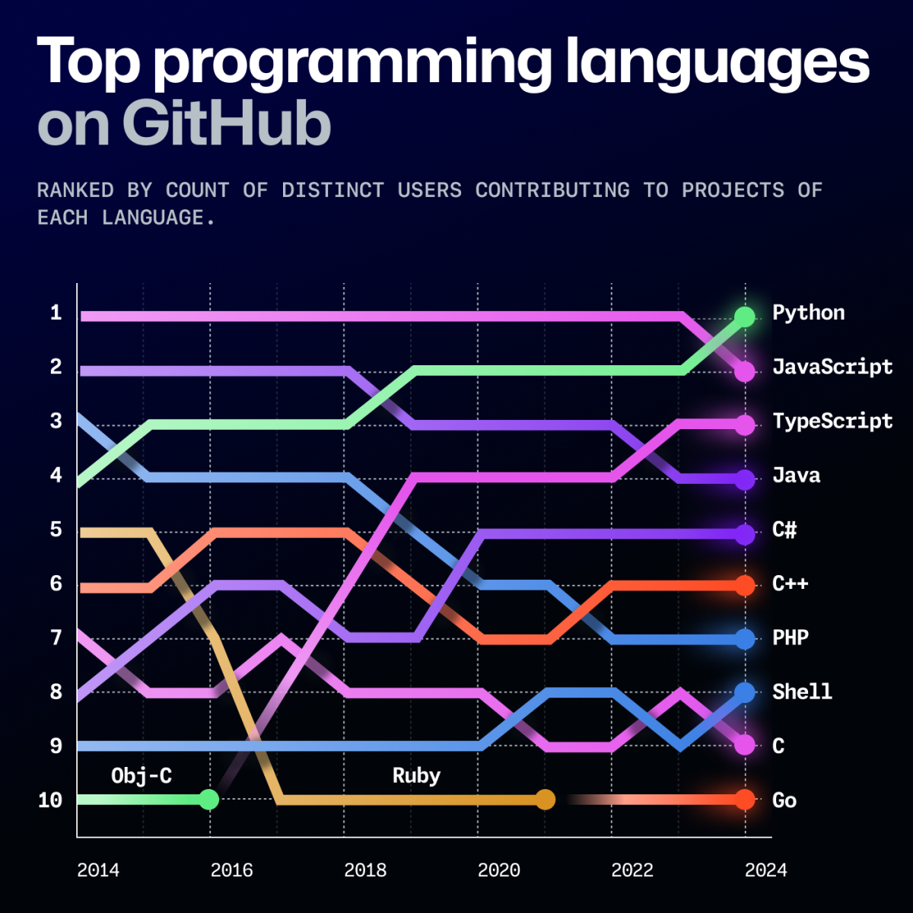

Урок 1
Темы урока
- знакомство
- краткое тестирование
- установка и обзор языка Python
- популярность различных языков программирования и её причины
- разница между интерпретируемыми и компилируемыми языками
- возможности Python
- способы запуска
- работа с интерпретатором в командной строке (REPL)

Разница между интерпретируемыми и
компилируемыми языками программирования
| Критерий |
Компилируемые языки |
Интерпретируемые языки |
| Тип выполнения |
Компиляция → машинный код |
Интерпретация строки за строкой |
| Примеры |
C, C++, Java |
Python, JavaScript, PHP |
| Быстродействие |
Быстрое |
Медленное |
| Платформозависимость |
Платформозависимый |
Платформонезависимый |
| Отладка |
Сложная |
Простая |
| Размер файла |
Большие исполняемые файлы |
Меньшие исполняемые файлы |
- Компилируемые языки подходят для задач, где требуется высокая производительность и оптимизация,
например, в разработке системного ПО или игр.
- Интерпретируемые языки удобны для быстрой разработки, тестирования и работы в среде, где важна
портабельность и простота использования, например, в веб-разработке или анализе данных.
Python, который изучается на уроке, является интерпретируемым языком, что делает его идеальным для обучения и
быстрой разработки благодаря своей простоте и гибкости.
Доска урока

План следующих занятий
- разбор заданий ЕГЭ
- разбор теории (системы счисления, логиеские выражения, измерение информации, и пр.)
- практика Python для решения заданий
- практика работы с таблицами и текстовыми файлами